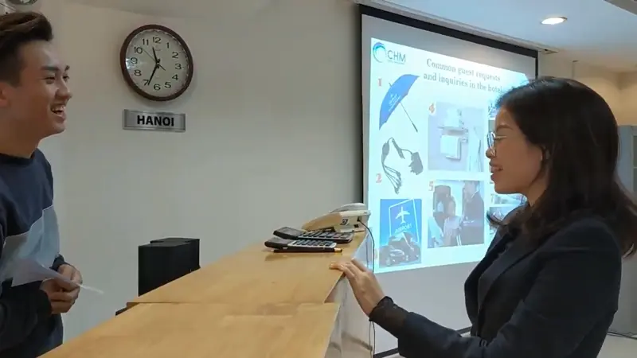
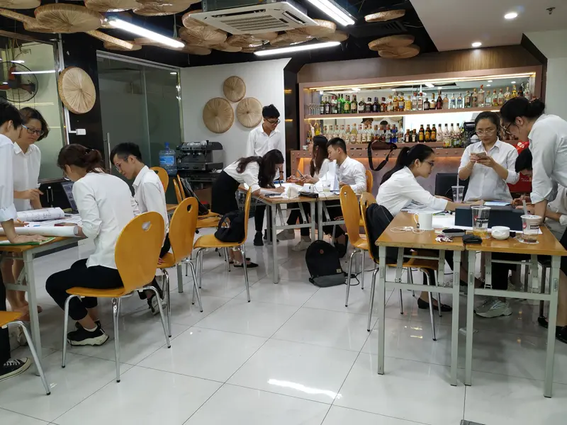
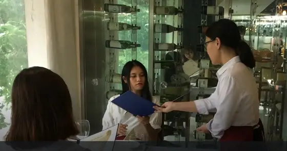
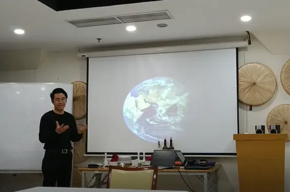
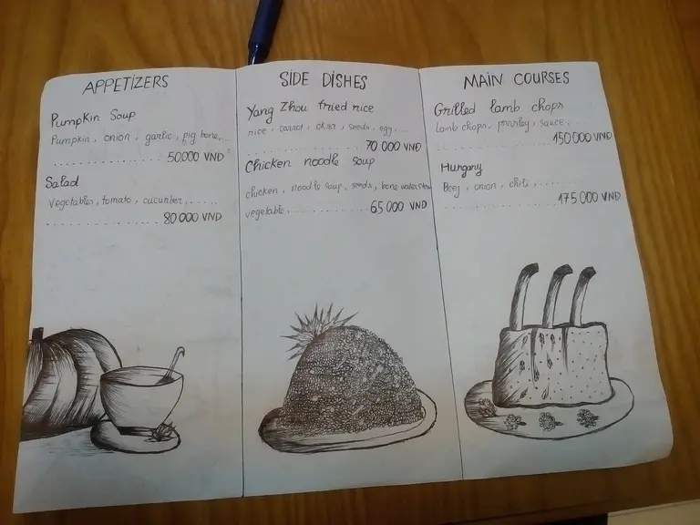
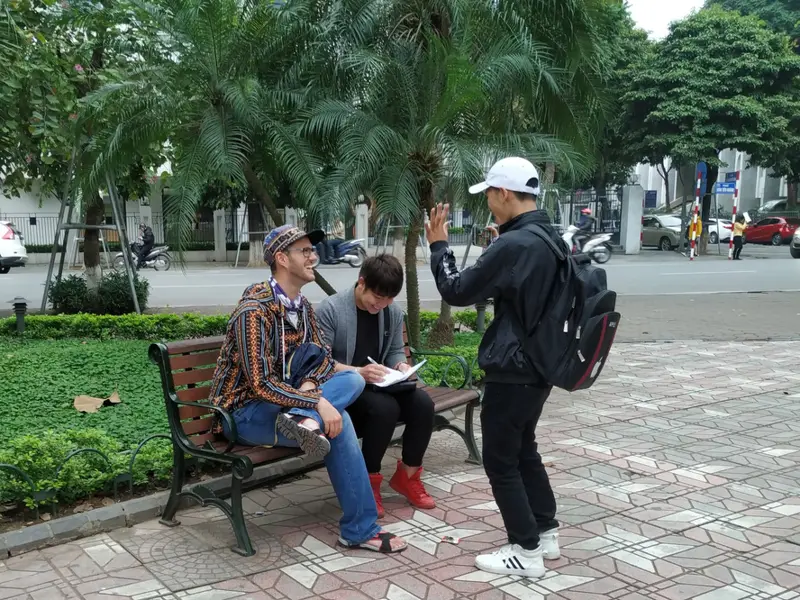
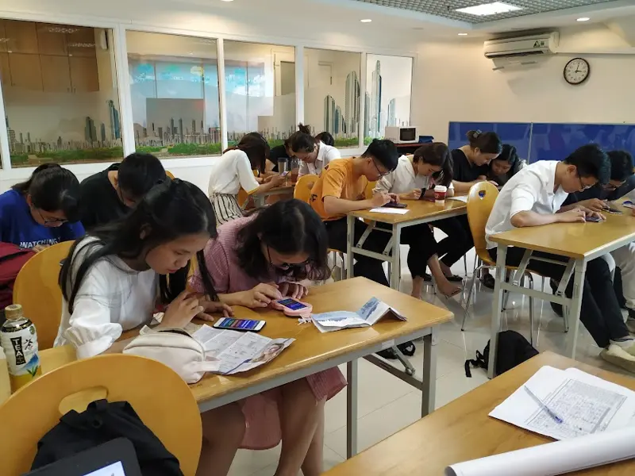
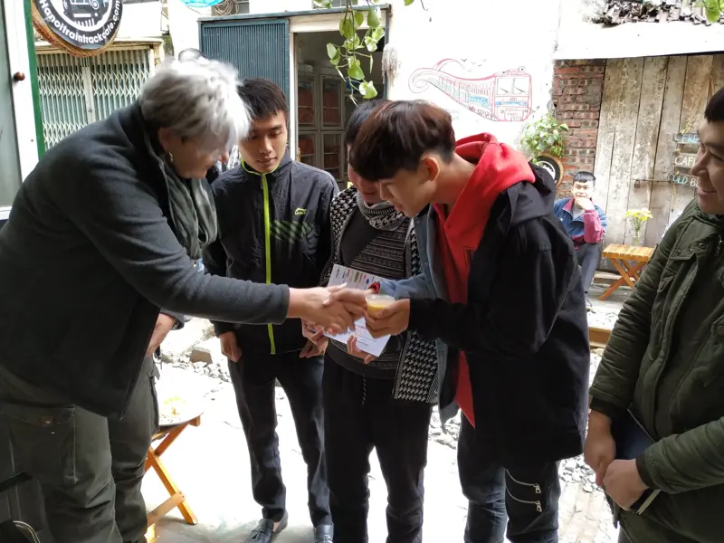

A Labor of Love: my teaching portfolio
I worked as a Lecturer at CHM International Institute, teaching hospitality and culinary learners through projects, collaboration and real-life practice.
What I taught
- English for Hotel
- English for Cooking
- Academic Skills
- Research Project
- Speak Up English
My teaching philosophy
My role as a language teacher is to instill the love of learning in my students through learning another language.
I let my students follow their interests, have freedom and choice in what they learn, and take responsibility for their learning processes.
Learning is most meaningful when students learn by doing, and collaborate on group projects, discussions, debate and more.
8 ways I teach

Role-Play
Students work in groups to analyze scenarios, decide their roles, and create possible scripts before acting them out.
- Interacting with others in authentic situations
- Thinking on their feet: practice the lesson's language and improvise

Group Work
Groups complete tasks that meet the lesson objectives, such as peer discussion, debate, talkshow, group presentation or simulation.
- Teamwork and collaboration, with creative and critical thinking
- Learning by doing: review and synthesize what they learned

Video Project
Students create a video that shows the complete guest experience at a fine-dining restaurant. Each student has a role (host/hostess, waiter/waitress, manager, customer). Handling a guest complaint is a plus.
- Speaking clearly and politely in a professional setting
- Rehearsing and applying useful expressions

Pecha Kucha Presentation
Students talk about a topic of their choice with 20 visual slides, speaking up to 20 seconds per slide (maximum 6 minutes 40 seconds).
- Delivering a speech about personal interests and life experiences
- Non-verbal communication: eye contact, tone of voice

Design Project
Students create factsheets of hotels or menus of restaurants they like, then present their designs in class.
- Presenting key information concisely and visually
- Applying the words learned in real-life situations

Street Survey
Students create or reuse a questionnaire on international cuisine or travelling, then work in groups to gather responses from people on the streets.
- Expressing themselves in English in authentic situations
- Breaking the ice, making small talk, building confidence

EdTech Games
Students review key vocabulary and expressions individually or in teams, using tools such as Quizlet.
- Learning that is fun and challenging
- Exploring different learning apps while reinforcing knowledge

Food Presentation Project
An authentic, performance-based assessment. Groups of 3 or 4 prepare a traditional Vietnamese dish, or any dish of their choice, and present it to real tourists at a train-track coffee shop in Hanoi.
- Before the day, learners study food and cooking vocabulary and expressions for presenting a recipe and describing taste
- Assessed on confidence, pronunciation, language and teamwork
Student feedback
I really appreciate how much effort my teacher puts into helping us improve our English. Her lectures are engaging and I've learned so much from her.
Ms. Hoa fosters a lively, enjoyable, and energetic environment for both learning and application.
She is enthusiastic about teaching, friendly and close to students. The teacher is like my sister!
She's a good teacher. Her teaching is easy to understand. Playing games related to the subject has been super effective!
I love my teacher!
Anonymous students